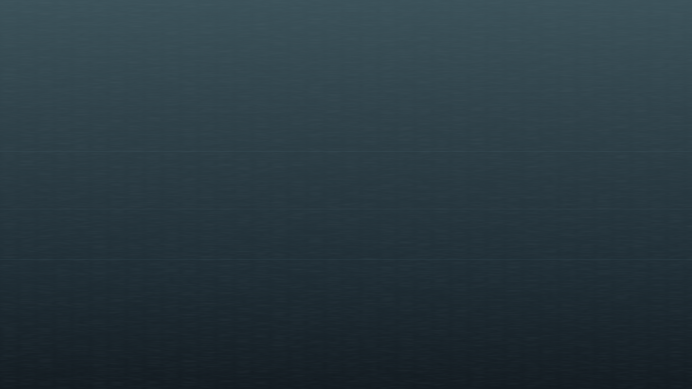

Das Projekt
Die Hexe ist überall. In der Popmusik und in den Prozessakten, auf TikTok und in der Kunstgeschichte, im feministischen Diskurs und im Horrorfilm. Hexenwerk erzählt diese Geschichten – lang, kurz, und manchmal nur als Fundstück.
Kein Folklore-Archiv. Kein akademischer Elfenbeinturm. Sondern ein Ort, an dem Forschung und Gegenwart aufeinandertreffen – entstanden aus einem Promotionsprojekt, das über sich hinauswächst.
Titelgeschichten
Die langen Stücke.
Tief recherchiert, essayistisch erzählt. Jede Titelgeschichte folgt einer Figur, einem Motiv oder einer Frage durch Jahrhunderte und Genres.
Die Stimme als Hexerei: Kate Bushs vokale Entgrenzung
Wie Kate Bush mit ihrer Stimme ein Terrain betrat, das weder Pop noch Klassik, weder Schrei noch Gesang war – und damit eine Tradition begründete, die bis heute nachwirkt.
April 2026 · 18 Min.
Wiederkehr der Unheimlichen: Hexenfiguren im kollektiven Bildgedächtnis
Von den Holzschnitten der frühen Neuzeit bis zu Instagrams #WitchTok – eine Archäologie der Bilder, die unsere Vorstellung von Hexen prägen.
DemnächstBjörks Biophilia als akustischer Animismus
Warum Björks radikalstes Album gleichzeitig ihr hexenhaftestes ist – und was das über Natur, Technologie und weibliche Stimme erzählt.
DemnächstMotive
Wiederkehrende Motive
Die Texte sind nicht nach Themen sortiert, sondern bewegen sich in einem Feld wiederkehrender Motive – Figuren, die sich durch unterschiedliche Gegenstände ziehen.
Zwischentöne
Das Kürzere, Schärfere.
Notizen, Besprechungen, Seitenwege. Wo die Titelgeschichten vertiefen, öffnen die Zwischentöne das Feld – thesenhafter, freier, überraschender.
Der Malleus Maleficarum als ästhetisches Dokument
Was der »Hexenhammer« über die Bildsprache des Verdachts erzählt – und warum seine Rhetorik bis heute nachhallt.
Notizen zu The Witch (Robert Eggers, 2015)
Warum Eggers' historistische Präzision den Film zu einem der ambivalentesten Hexenporträts der Gegenwart macht.
Goyas Hexen und das 18. Jahrhundert der Aufklärung
Wie eine Bildserie die Nachtseite der Vernunft verhandelt – und was das für unsere Gegenwart bedeutet.
Anne Sextons Transformations: Märchen als feministische Hexerei
Wie Sexton in den 1970ern Grimms Märchen umschreibt – und damit eine Linie vorbereitet, die bis zu Angela Carter führt.
Fundstücke
Material, das unter den Texten arbeitet.
Primärquellen, historische Bilder, Dokumente, Zeitungsausschnitte. Ein kuratierter, langsam wachsender Bestand.
Die Fundstücke werden ab Herbst 2026 schrittweise freigelegt.
Im Kern
Stimme, Performance
und kulturelles Gedächtnis
Im Zentrum steht eine Frage: Wie kehrt die Figur der Hexe in der Popmusik seit den 1970er Jahren zurück – bei Kate Bush, Björk, Tori Amos, Florence Welch? Was aktivieren diese Stimmen, und welche historischen Schichten werden dabei hörbar?
Diese Frage bildet den Kern. Hexenwerk öffnet das Feld darüber hinaus: für Seitenwege, Hintergrundtexte und Fundstücke, die den engeren Rahmen übersteigen.
Mehr über das Projekt →